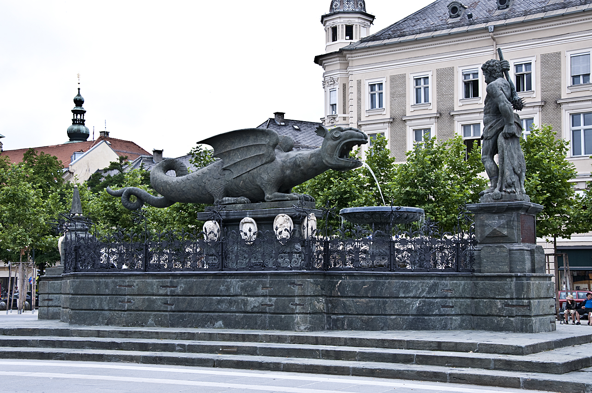

In the heart of the Klagenfurt basin, nestled within the Alps, lies the city of Klagenfurt. Legends say that it was founded by a group of brave men who slew an abominable monster that had terrorised the area. The more likely explanation is, that it was founded close to an opportunity to cross the nearby river but superstition and mythology plays an important role in the city's identity.

From its founding Klagenfurt suffered numerous catastrophes ranging from earthquakes over fires and a locust plague to a peasant's revolt, leading Emperor Maximilian I. to cede the city to the Estate of Carinthia who over the next 50 years developed it to one of the most well-fortified cities in the Alps.
Lake Wörth
Right next to the city is Lake Woerth (Wörthersee in German), Carinthia's largest lake and one of the warmest alpine lakes.


A tale tells of the lakes' creation, when the inhabitants of a city in its basin were having too good of a time the day before Easter. Disgusted by the people dancing and laughing, a small, bearded man came, warning them of grave consequences should they not calm down before midnight. When that didn't happen, he opened his small casket and water leaked out of it until the entire lake basin was filled and the people had drowned. A statue in Klagenfurt references this tale.
The Lindwurm
The Lindwurm is Klagenfurt's most popular landmark. Located at the Neuer Platz, the city's main square, it is modeled after an old fable popular in the area.
